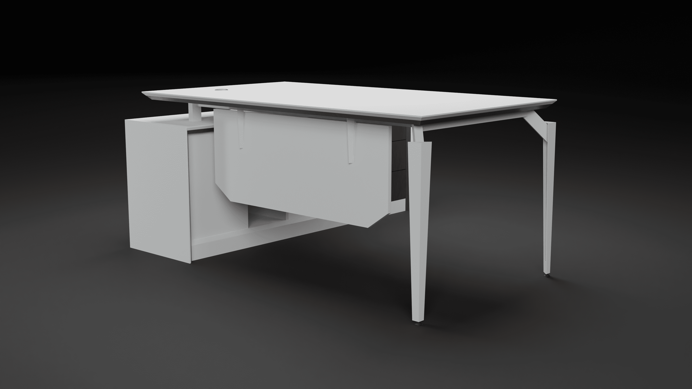
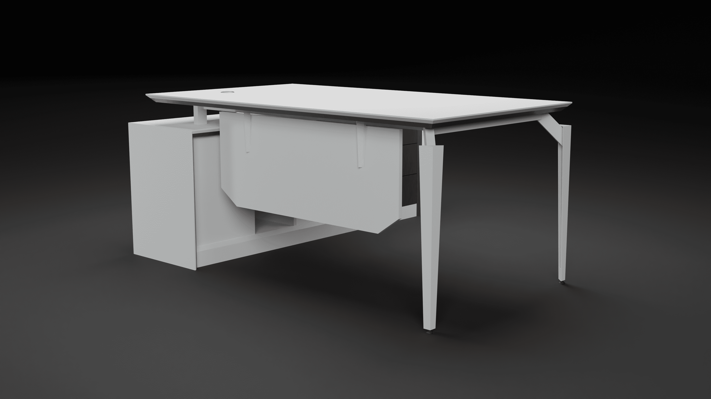
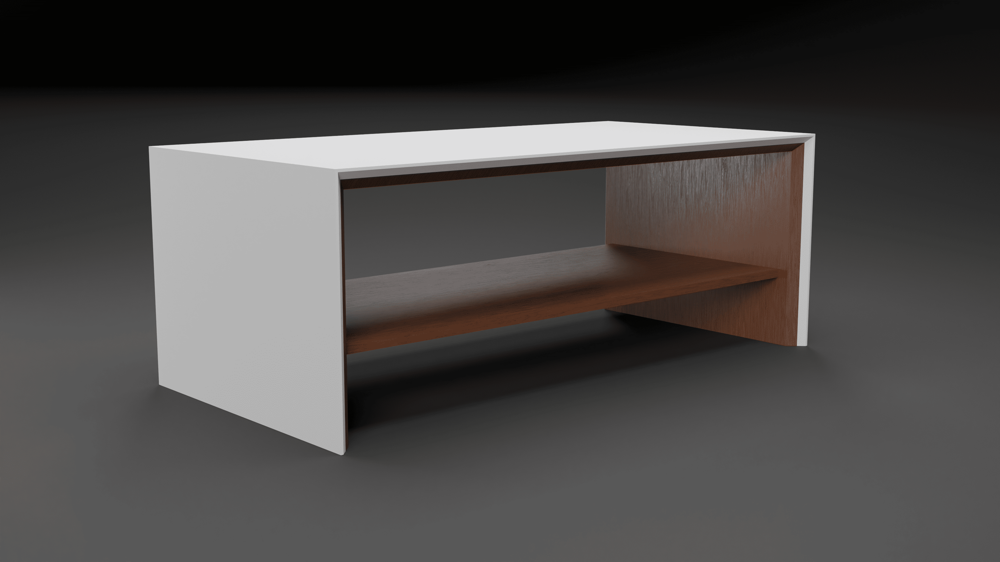
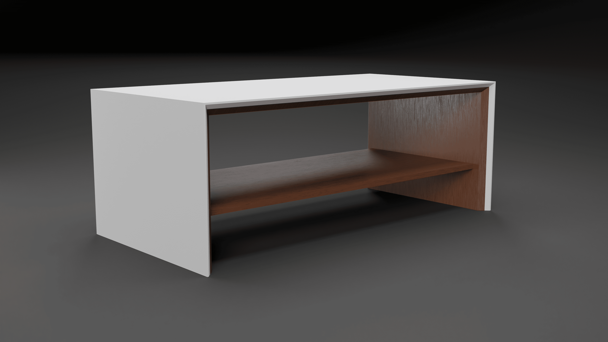
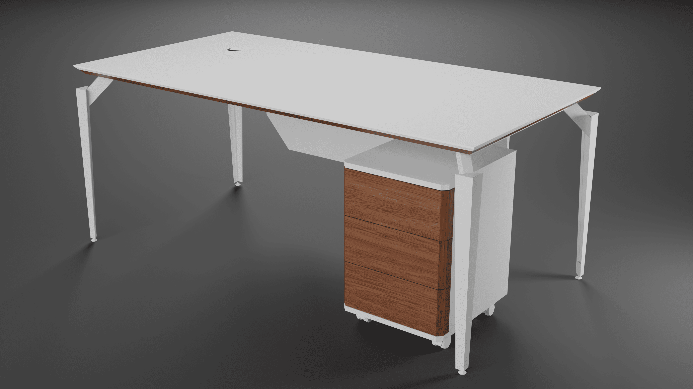
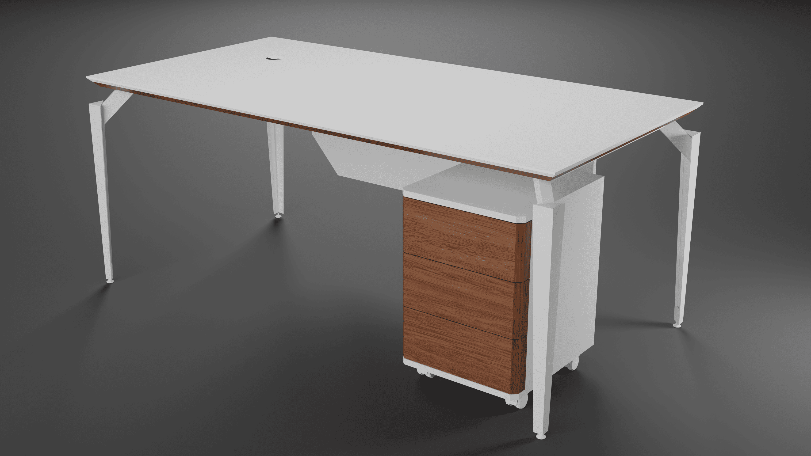
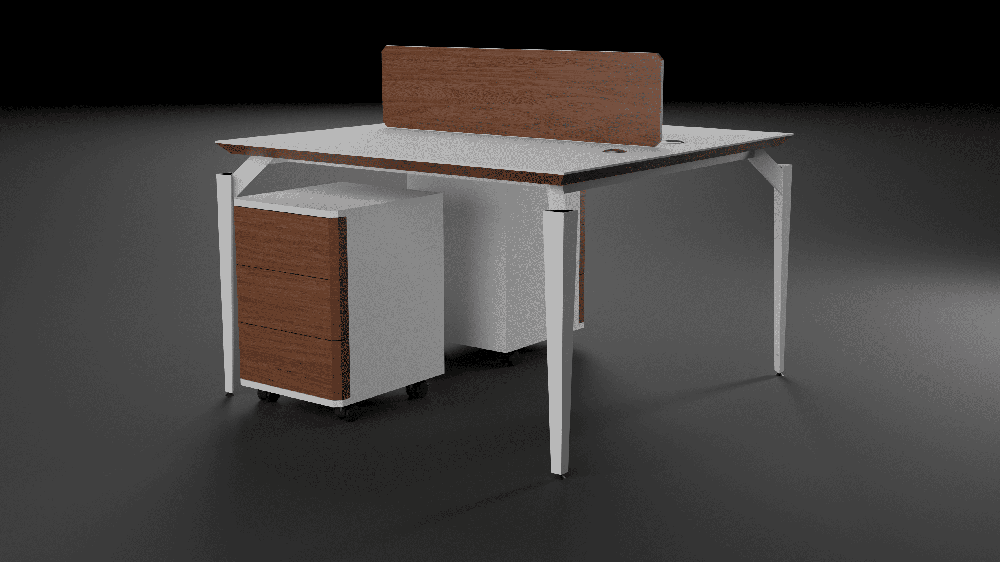
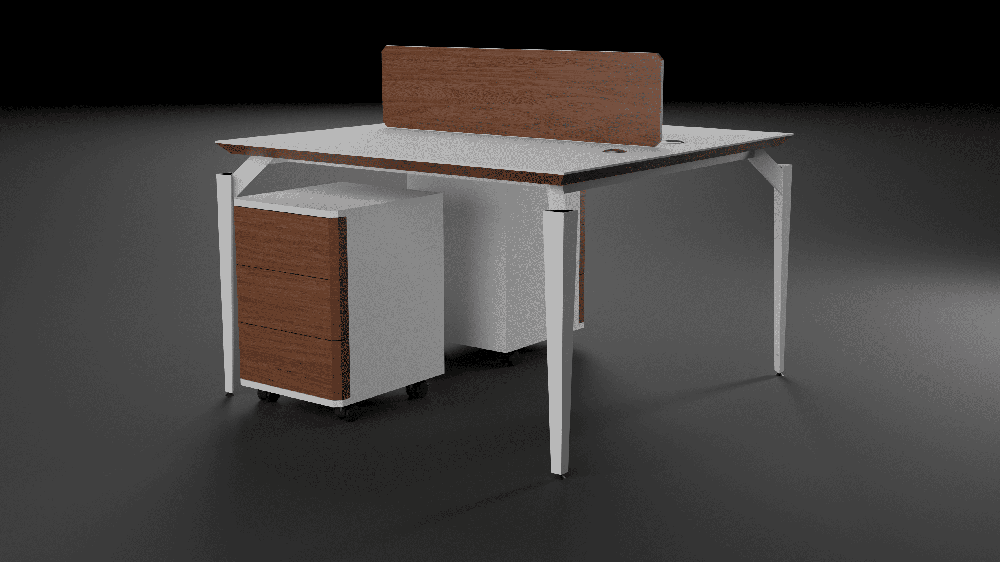

My Projects
Gallery

Modern chair Design
A sleek and ergonomic chair designed for modern living spaces

Sofa Design
Elegant sofa for modern living rooms.

3-Seater Waiting Chair
Comfortable and durable waiting chair for public spaces.
-min.png)
Modern Office Desk Family
Modern and functional office desk family for professional workspaces.

Reception Desk Design
Minimalist reception desk designed for both functionality and aesthetics.

Dining chair Design
This dining chair is designed with perfect blend of style and comfort.
cafe chair Design
Outdoor dining chair is designed with perfect blend of style and comfort.
Videos
Project Walkthrough
A detailed walkthrough of the modern chair design process.
Sofa Assembly
Step-by-step assembly of the modular sofa system.
3D Models
This 3D model showcases a modern reception desk designed for corporate offices. It features a sleek, minimalist design with high-quality materials and integrated cable management for a clean and professional look.
Others
Design Sketches
Explore the initial sketches and concepts behind my projects.
Material Samples
View samples of materials used in my designs.


Modern Chair Design
This project involved designing a sleek and ergonomic chair for modern living spaces. The chair is made with sustainable materials and features a minimalist design.
Tools Used: SketchUp, Adobe Illustrator, Blender


Modular Sofa Design
This project involved designing a modular sofa system for modern living rooms. The sofa features customizable components that can be rearranged to fit any space. It is made with high-quality materials for durability and comfort.
Tools Used: SketchUp, Blender
Materials Used: plywood, wood, Foam, Fabric


3-Seater Waiting Chair
This project involved designing a comfortable and durable 3-seater waiting chair for public spaces. The chair features a sleek, modern design with ergonomic support for long waiting periods. It is made with high-quality materials to ensure durability and comfort.
Tools Used: SolidWorks, Blender
Materials Used: Sheet metal, RHS, Powder paint, Foam, Imitation
 

 

 

 

Modern Office Desk Family
This project involved designing a modern and functional office desk family for professional workspaces. The desk family includes a main desk, side tables, Bookshelf and Workstations all designed with a sleek and minimalist aesthetic. The desks are made with high-quality materials to ensure durability and ergonomic comfort.
Tools Used: SketchUp, Blender
Materials Used: MDF, PVC Paper, Paint, Sheet metal, RHS, Powder paint


Modern Reception Desk
This contemporary reception desk combines elegance and practicality, making it an ideal choice for any professional environment. Crafted with premium materials, it offers durability and a polished finish that enhances the overall ambiance of your space. Whether you're looking to make a lasting impression on clients or create a welcoming atmosphere for visitors, this reception desk delivers both style and functionality.
Tools Used:Blender
Materials Used: MDF, PVC Paper, Paint


Dining Chair
This modern dining chair combines sleek metal legs with comfortable upholstery, making it perfect for contemporary dining spaces. Its minimalist design and durable construction ensure both style and functionality.
Tools Used:SketchUp, Blender
Materials Used: CHS, Plywood, Foam, Fabric, Paint


Dining Chair
This modern dining chair combines sleek metal legs with comfortable upholstery, making it perfect for contemporary dining spaces. Its minimalist design and durable construction ensure both style and functionality.
Tools Used:SketchUp, Blender
Materials Used: CHS, Plywood, Foam, Fabric, Paint